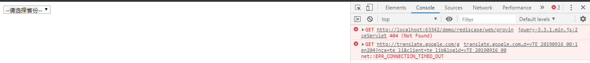
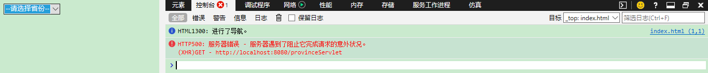

今天学了Jedis的相关内容,然后做了一个案例,但是出现了错误，然后我百度了一晚上没有解决，想到看看发个博客能不能有大佬帮我看一下问题出现在哪里，百度了一晚上有点懵逼。求大佬帮我解决，在这小弟我先万分感谢大佬们点进来帮我看，感谢大佬们~
下面是案例需求：
案例需求：
1. 提供index.html页面，页面中有一个省份 下拉列表
2. 当 页面加载完成后 发送ajax请求，加载所有省份
出现的错误：为啥不一样的浏览器会出现不一样的错误，我都被搞懵了，这是要学到放弃啊~但是我不会放弃的，求大佬帮我看看哪里出问题了🙏🙏
chrome浏览器出现的错误

Microsoft edge浏览器出现的错误

下面是我的代码
1 package cn.local.domain;
2
3 public class Province {
4 private int id;
5 private String name;
6
7 public Province() {
8 }
9
10 public Province(int id, String name) {
11 this.id = id;
12 this.name = name;
13 }
14
15 public int getId() {
16 return id;
17 }
18
19 public void setId(int id) {
20 this.id = id;
21 }
22
23 public String getName() {
24 return name;
25 }
26
27 public void setName(String name) {
28 this.name = name;
29 }
30
31 @Override
32 public String toString() {
33 return "Province{" +
34 "id=" + id +
35 ", name='" + name + '\'' +
36 '}';
37 }
38 }数据库类：
1 package cn.local.dao;
2
3 import cn.local.domain.Province;
4
5 import java.util.List;
6
7 public interface ProvinceDao {
8 public List<Province> findAll();
9
10 }
1 package cn.local.dao.impl;
2
3 import cn.local.dao.ProvinceDao;
4 import cn.local.domain.Province;
5 import cn.local.util.JDBCUtils;
6 import org.springframework.jdbc.core.BeanPropertyRowMapper;
7 import org.springframework.jdbc.core.JdbcTemplate;
8
9 import java.util.List;
10
11 public class ProvinceDaoImpl implements ProvinceDao {
12 //1.声明成员变量 jdbctemplement
13 private JdbcTemplate template = new JdbcTemplate(JDBCUtils.getDataSource());
14
15 @Override
16 public List<Province> findAll() {
17 //1.定义sql
18 String sql = "select * from province ";
19 //2.执行sql
20 List<Province> list = template.query(sql, new BeanPropertyRowMapper<Province>(Province.class));
21 return list;
22 }
23 }
JDBC工具类
1 package cn.local.util;
2
3 import com.alibaba.druid.pool.DruidDataSourceFactory;
4
5 import javax.sql.DataSource;
6 import java.io.IOException;
7 import java.io.InputStream;
8 import java.sql.Connection;
9 import java.sql.SQLException;
10 import java.util.Properties;
11
12 public class JDBCUtils {
13 private static DataSource ds ;
14
15 static {
16
17 try {
18 //1.加载配置文件
19 Properties pro = new Properties();
20 //使用ClassLoader加载配置文件，获取字节输入流
21 InputStream is = JDBCUtils.class.getClassLoader().getResourceAsStream("druid.properties");
22 pro.load(is);
23
24 //2.初始化连接池对象
25 ds = DruidDataSourceFactory.createDataSource(pro);
26
27 } catch (IOException e) {
28 e.printStackTrace();
29 } catch (Exception e) {
30 e.printStackTrace();
31 }
32 }
33
34 /**
35 * 获取连接池对象
36 */
37 public static DataSource getDataSource(){
38 return ds;
39 }
40
41
42 /**
43 * 获取连接Connection对象
44 */
45 public static Connection getConnection() throws SQLException {
46 return ds.getConnection();
47 }
48 }
Jedis工具类
1 package cn.local.jedis;
2
3 import redis.clients.jedis.Jedis;
4 import redis.clients.jedis.JedisPool;
5 import redis.clients.jedis.JedisPoolConfig;
6
7 import java.io.IOException;
8 import java.io.InputStream;
9 import java.util.Properties;
10
11 public class JedisPoolUtils {
12 private static JedisPool jedisPool;
13
14 static{
15 //读取配置文件
16 InputStream is = JedisPoolUtils.class.getClassLoader().getResourceAsStream("jedis.properties");
17 //创建Properties对象
18 Properties pro = new Properties();
19 //关联文件
20 try {
21 pro.load(is);
22 } catch (IOException e) {
23 e.printStackTrace();
24 }
25 //获取数据，设置到JedisPoolConfig中
26 JedisPoolConfig config = new JedisPoolConfig();
27 config.setMaxTotal(Integer.parseInt(pro.getProperty("maxTotal")));
28 config.setMaxIdle(Integer.parseInt(pro.getProperty("maxIdle")));
29
30 //初始化JedisPool
31 jedisPool = new JedisPool(config,pro.getProperty("host"),Integer.parseInt(pro.getProperty("port")));
32
33
34
35 }
36
37
38 /**
39 * 获取连接方法
40 */
41 public static Jedis getJedis(){
42 return jedisPool.getResource();
43 }
44 }
service类
1 package cn.local.service;
2
3 import cn.local.domain.Province;
4
5 import java.util.List;
6
7 public interface ProvinceService {
8 public List<Province> findAll();
9
10 public String findAllJson();
11 } 1 package cn.local.service.impl;
2
3 import cn.local.dao.ProvinceDao;
4 import cn.local.dao.impl.ProvinceDaoImpl;
5 import cn.local.domain.Province;
6 import cn.local.jedis.JedisPoolUtils;
7 import cn.local.service.ProvinceService;
8 import com.fasterxml.jackson.core.JsonProcessingException;
9 import com.fasterxml.jackson.databind.ObjectMapper;
10 import redis.clients.jedis.Jedis;
11
12
13 import java.util.List;
14
15 public class ProvinceServiceImpl implements ProvinceService {
16 //声明dao
17 private ProvinceDao dao = new ProvinceDaoImpl();
18
19 @Override
20 public List<Province> findAll() {
21 return dao.findAll();
22 }
23
24 /**
25 使用redis缓存
26 */
27
28 @Override
29 public String findAllJson() {
30 //1.先从redis中查询数据
31 //1.1获取redis客户端连接
32 Jedis jedis = JedisPoolUtils.getJedis();
33 String province_json = jedis.get("province");
34
35 //2判断 province_json 数据是否为null
36 if(province_json == null || province_json.length() == 0){
37 //redis中没有数据
38 System.out.println("redis中没数据，查询数据库...");
39 //2.1从数据中查询
40 List<Province> ps = dao.findAll();
41 //2.2将list序列化为json
42 ObjectMapper mapper = new ObjectMapper();
43 try {
44 province_json = mapper.writeValueAsString(ps);
45 } catch (JsonProcessingException e) {
46 e.printStackTrace();
47 }
48
49 //2.3 将json数据存入redis
50 jedis.set("province",province_json);
51 //归还连接
52 jedis.close();
53
54 }else{
55 System.out.println("redis中有数据，查询缓存...");
56 }
57
58
59 return province_json;
60 }
61 }
servlet类
1 package cn.local.web.servlet;
2
3
4 import cn.local.service.ProvinceService;
5 import cn.local.service.impl.ProvinceServiceImpl;
6
7 import javax.servlet.ServletException;
8 import javax.servlet.annotation.WebServlet;
9 import javax.servlet.http.HttpServlet;
10 import javax.servlet.http.HttpServletRequest;
11 import javax.servlet.http.HttpServletResponse;
12 import java.io.IOException;
13
14 @WebServlet("/provinceServlet")
15 public class ProvinceServlet extends HttpServlet {
16 protected void doPost(HttpServletRequest request, HttpServletResponse response) throws IOException {
17 /* //1.调用service查询
18 ProvinceService service = new ProvinceServiceImpl();
19 List<Province> list = service.findAll();
20 //2.序列化list为json
21 ObjectMapper mapper = new ObjectMapper();
22 String json = mapper.writeValueAsString(list);*/
23
24 //1.调用service查询
25 ProvinceService service = new ProvinceServiceImpl();
26 String json = service.findAllJson();
27
28
29 System.out.println(json);
30 //3.响应结果
31 response.setContentType("application/json;charset=utf-8");
32 response.getWriter().write(json);
33
34 }
35
36 protected void doGet(HttpServletRequest request, HttpServletResponse response) throws ServletException, IOException {
37 this.doPost(request, response);
38 }
39 }
Html文件
<!DOCTYPE html>
<html lang="en">
<head>
<meta charset="UTF-8">
<title>Title</title>
<script src="js/jquery-3.3.1.min.js"></script>
<script>
$(function () {
//发送ajax请求，加载所有省份数据
$.get("provinceServlet",{},function (data) {
//[{"id":1,"name":"北京"},{"id":2,"name":"上海"},{"id":3,"name":"广州"},{"id":4,"name":"陕西"}]
//1.获取select
var province = $("#province");
//2.遍历json数组
$(data).each(function () {
//3.创建<option>
var option = "<option name='"+this.id+"'>"+this.name+"</option>";
//4.调用select的append追加option
province.append(option);
});
});
});
</script>
</head>
<body>
<select id="province">
<option>--请选择省份--</option>
</select>
</body>
</html>
配置文件
driverClassName=com.mysql.jdbc.Driver
url=jdbc:mysql:///jedis
username=root
password=root
initialSize=5
maxActive=10
maxWait=3000
host=localhost
port=6379
maxTotal=50
maxIdle=10